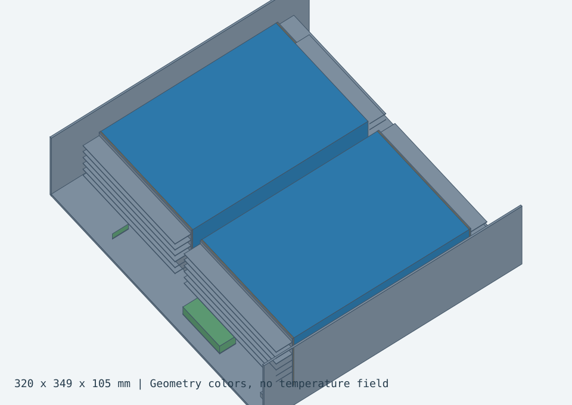

Find where automated meshing and solving break. Then make the results worth trusting.
Khorium's platform takes raw CAD to a solved CFD or FEA study. I test that pipeline on real parts and validate its results.
Simulation Engineer · 2026 to present
Role
Simulation Engineer
Product
Automated CAD-to-simulation platform
Tools
OpenFOAM, CalculiX, Gmsh, Python
Work
Pressure testing, validation, setup design
26real CAD geometries meshed against a commercial solver, pass or fail logged per stage
82.5%boundary-layer coverage on the hardest fan, above a 62 to 77% commercial reference
1.3%flow-separation error against experiment on a NASA benchmark
100+validation studies against benchmarks, hand calculations and a commercial solver
Meshing pressure tests
Detail A · Real product geometry
Automated meshing has to survive real CAD: small gaps, sliver faces and parts that were never drawn to be meshed. I ran the mesher on real product geometry and logged where it broke, what fixed it and where the limits are.
What I did
Pressure-tested the mesher on 26 real CAD geometries against a commercial solver, logging pass or fail for each mesher and stage, so each failure traced back to the stage that caused it.
Meshed5 of 5 fan models on at least 3 paths each and raised boundary-layer coverage to 82.5% on the hardest one, the only fan above a 62 to 77% commercial reference.
Found a ceiling of about 10 million cells in serial post-processing.
Wrote a rescue sequence for geometry that would not mesh: repair the CAD, fall back to a faceted surface, then force the fuse.
Boundary-layer coverage · fan campaign · shaded band is the commercial reference
Solver validation
Detail B · Score against references
Converged runs can still be wrong. I compared the open-source solver against a commercial solver, hand calculations and published experiments, and traced each gap to a setting I could change.
What I did
Traced a 17% wall-force gap against the commercial solver to the convection scheme, and the scheme change closed about 75% of it.
Found a scheme setting that quietly turned a turbulent run laminar. Fixing it and the wall treatment brought an aircraft model's form drag from 2.11 times high to within 2.7% of the commercial solver.
Scored the solver on textbook cases with published data, listed below.
Validation against references
Case
Difference
Compared
Result
Reference
NASA wall-mounted hump
-1.3%
Separation location
0.657
0.665, experiment
Square duct
-0.6%
Benchmark score
Published data
Blunt cone
under 0.1%
Drag coefficient
0.430756
0.4308, hand calculation
Heat exchanger
within 8%
Pressure drop
Darcy-Weisbach hand calculation
NACA 0012 airfoil
+12.8%
Lift slope
0.1237 per degree
0.1097 per degree, thin-airfoil theory
Backward-facing step
-13.2%
Reattachment length
5.435 step heights
6.26, experiment
References are published experiments, theory or hand calculations. A blank result means only the difference was recorded.
Result fields · OpenFOAM, k-omega SST · hover to magnify
Fig. 4 · 9° cone · pressure coefficient · qualitative only; the stagnation region is coarse
Face naming
Detail C · Labels that survive repair
Boundary conditions are set on named faces, such as an inlet or a heated wall. Repair and meshing rename and reshape faces along the way, and a label that lands on the wrong surface still gives a finished run with a wrong answer and no warning.
01 · NameThe user labels CAD faces once.
02 · TrackEach label follows its face through repair and meshing, with a shape fingerprint as a fallback.
03 · ResolveEach automatic rename is undone in a fixed order.
04 · RejectA label that resolves to nothing stops the run before the solve.
What I did
Designed how face labels carry from the CAD upload through repair, meshing and the solver, so boundary conditions attach to the surface the user picked.
Diagnosed a heat-exchanger setup with mislabelled ports that showed a 99% mass imbalance. After relabelling, mass balanced to 2.36 × 10⁻⁶ and pressure drop matched the hand calculation within 8%.
Assembly FEA checks
Detail D · Finished runs can still be wrong
Multi-part assemblies add contact, joints and fasteners, and each one can make a run finish with a wrong answer. I checked the results against force balance and hand calculations.
What I did
Got an assembly that would not converge to solve in about 12 s by bonding its 62 joints, with displacement and peak stress in a believable range.
Turned results that finished but were wrong, such as contact pressures in the gigapascals and parts that silently split apart, into force-balance checks the platform can run.
Checked a riveted joint against hand calculations and found the textbook equal-share estimate missed the worst rivet's load by 1.54 times.
Validation approach
Detail E · Worst axis wins
I set how a result earns trust: compare it in layers, score it on its weakest point and keep every failure visible in the score.
01 · Hand calculationClosed-form checks for every study.
02 · Design sweepOne study per geometry, varied on purpose.
03 · Other solverThe same case in a commercial solver.
04 · Wind tunnelPublished or partner test data.
05 · FlightField data where it exists.
Rules I set
Score beyond the average: the weakest axis sets the result.
Compare dimensionless quantities such as Cd, Cp and lift slope.
Gate on wall resolution and mass balance before any comparison counts.
Show anything not yet checked as an open gap.
Illustration of the scoring rule · example values
Delivery-drone battery cooling
Thermal design study
A two-pack cooling module passes mesh and time-step checks, but the hot case exceeds the assumed temperature limit. The cold case retains a small margin with preconditioning and ideal ventilation isolation.
Hot case / above temperature limit60.80 °C
Pack 2 peak at 835.65 s. Margin to the assumed 60 °C upper limit: −0.80 °C. Air and initial solids are +49 °C; altitude is 3000 m.
Cold case / temperature margin11.04 °C
Pack 2 minimum at 390 s, followed by recovery. Margin above the assumed 10 °C lower limit: +1.04 °C. Air is −20 °C; all solids start at +15 °C.
Model assumptions. Two separate 835.65 s constant-load thermal simulations include conduction, prescribed convection, directional radiation and solar loading. Pack properties, heat loads and contact conductance are assumed. The cold case starts at +15 °C and uses zero net throughflow, with internal mixing and radiative ports retained.
Cooling-module CAD
Drag to rotate; pinch or use the zoom controls to magnify. Arrow keys rotate, + / − zoom, Home resets and Space toggles spin.
BlueBattery packs
AmberThermal interface pads
GrayAluminum tray, spreaders & fins
GreenBMS & power electronics

Cooling-module cutaway.
Two-pack end-fin concept with parallel heat paths through the base and end spreaders. The cutaway exposes the packs and thermal interfaces. Colors identify components.
Hot and cold temperature histories with the assumed operating limits.
Conduction first
A 50 °C target with 49 °C air leaves a 1 K temperature difference. At 71.63 W per pack, the single-path resistance budget is 0.01396 K/W; the bottom pad and contacts alone contribute 0.02043 K/W. Parallel end spreaders and shorter, wider bridges address this conduction bottleneck.
Airflow must be controlled
Shrouds direct air through the fins and separate inlet and outlet flow to reduce bypass. Cold operation requires ventilation isolation and a +15 °C preheat. Hardware tests should measure leakage, fan pressure and control thresholds.
Observe location and timing
Pack 2 reaches its hot peak at [55, 220, 11] mm at the end of the simulation. Its cold minimum occurs at [252.5, 330, 11] mm at 390 s. Both locations are at the modeled pack base, making the base and end paths useful sensor locations.
Numerical checks passed
Finer meshes and shorter time steps change temperatures by less than 0.2 °C. Physical validation requires measured heat loads, directional pack properties, contact conductance, airflow and temperature histories.
Numerical verification and model assumptions
Maximum solid-temperature differences; comparison threshold: 0.2 °C.
Comparison
Difference
Numerical result
Hot mesh
0.0493 °C
Pass
Hot time step
0.1770 °C
Pass
Cold mesh
0.0923 °C
Pass
Cold time step
0.0845 °C
Pass
The cold comparison covers 800 temperature fields. Hot-case checks include geometry and local temperature comparisons. The table reports sensitivity to mesh spacing and time step.
The model uses two 12S, 16 Ah packs, each generating 71.634 W, plus 5 W from the BMS and 10 W from power electronics. Pack properties, contact conductance and convection coefficients are assumed. Thermal calculations use prescribed airflow; the coupled CFD airflow calculation remained unconverged.
Mesh and time-step differences remain below 0.2 °C; the hot case exceeds 60 °C.Design tradeoffs and reduced-order model
Retain parallel end spreaders and improve pad engagement and contact control. Shorter, wider conduction bridges are a candidate for reducing path resistance.
Shroud fin passages and separate inlet/outlet paths to reduce bypass, while allowing ventilation isolation in cold operation. Measure installed airflow to set control thresholds.
Track mass and energy together: the modeled module is 11.18 kg. The examined fan pair adds 0.34 kg and about 10.13 W bus load before ducts/mounts. Preconditioning all modeled solids from −20 to +15 °C stores at least 114.63 Wh, excluding losses.
Next simulations should quantify the temperature benefit of improved contacts, wider conduction paths and controlled airflow. Mass, fan power and preheat energy belong in the aircraft energy budget.
Reduced-order model. The 54-state model has a 0.372 °C error on a withheld contact case, exceeding the 0.2 °C criterion. Further basis refinement and independent cases are needed before mission-level use.
Coupled thermal-flow setup with a 25 °C inlet and 40 W per pack. Solids are shown on a Kelvin temperature scale. The solver failed its energy-balance and convergence checks.
Design outcome
The hot case reaches 60.80 °C, exceeding the assumed 60 °C limit by 0.80 °C. The cold case stays 1.04 °C above the 10 °C limit with preheat and ventilation isolation.
The next design iteration focuses on thermal-interface contact, parallel conduction paths and managed airflow. Mesh and time-step comparisons are within 0.2 °C; hardware testing should compare measured temperatures and installed airflow with the model.